Activating the audience is an important part of Miguel’s practice in which sculptureand
it’s potential are pushed into the realm of situations and choreographed moments. As a child
he would purposely create awkward moments. Apropos of nothing he might fallover just to
generate a reaction. Rather than understanding this as a cry for attention what if we think
of it as a considered negation of passivity? For Miguel object and body are the same. From
this position sculpture can find form in aphysical act as much as in a material body.
Through techniques such as generating instructions on how theaudience should interact with
the work, he creates platforms in which performative dogmas and sculptural forms clash.
Within these clashes the audience is free to explore and discover thingsfor themselves.
Through the versatile and unpredictable outcomes of his practice Miguel enacts aconsidered
loss of control in both himself, the audience and the sculptures. (Text written by Jacob
Dwyer)
Miguel shook each person’s hand, describing the sensations it produced: the slide of the
hands coming together; the pressure of the fingers in the moment of the grasp; the release
and the slipping of skin across palms, down to fingers and into air. He announced the
performance had now begun. It would be activated each time a handshake occurred. It would
never be experienced as a whole. It would fragment across bodies and time: each handshake
(inadvertently) continuing the work through the embodiment of the act and the consciousness
of its form. It would end when hands were no longer shook, or when Miguel’s appropriation
had been forgotten. I performed the work for some months. (Text written by Dieuwertje
Hehewerth)
Controversial is a regular adjective used to describe artists and their work. Miguel Witzke Pereira
is not an exception to this rule, yet he is an exception to the pattern. I will elaborate. His
choice of making simple pieces, which require interaction to be activated, forces you to slow down
in time. If you are in a hurry, you better cancel your plans cause you will be late. It is a
trivial chat with your neighbor to whom you ask favors from time to time. The same 5000 faces
Miguel saw during the first 16 years of his life were familiar but not known. That is another way
of naming a small village(>). People have time, sometimes too much time, to look at each others
faces. Miguel’s work is a constant proposition to create intimacy with one condition: you must
respect the time intimacy demands. His rural tempo crystallized when he moved to Lisbon(>>x3), and
boomed later when he settled in Amsterdam(>>x10). The materials he uses are also a symbol of a
magnified stubbornness: wool, yarn, wood, cement and plaster all resistant. His refusal to use
industrial, city-like or cooperative material is a way of assuring that time is not compromised.
However, it is not slow tempo that Miguel is practicing, and that is where the controversy comes
in, he practices patience. And that is a side effect of his work on you too. (Text written by Marga
Alfa)
 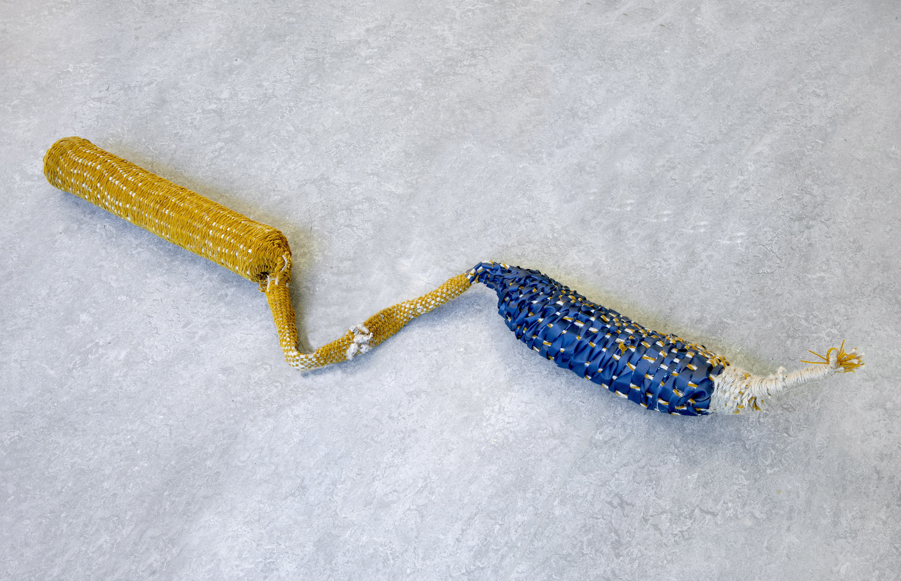
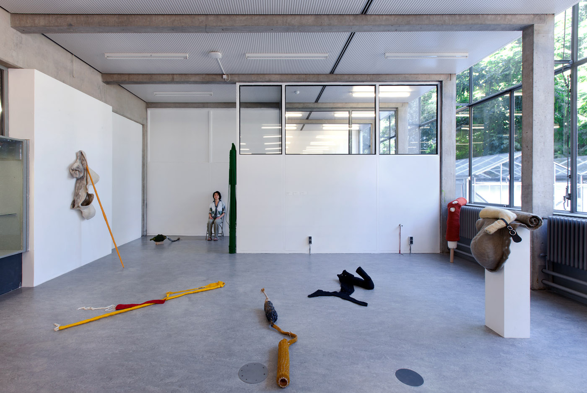
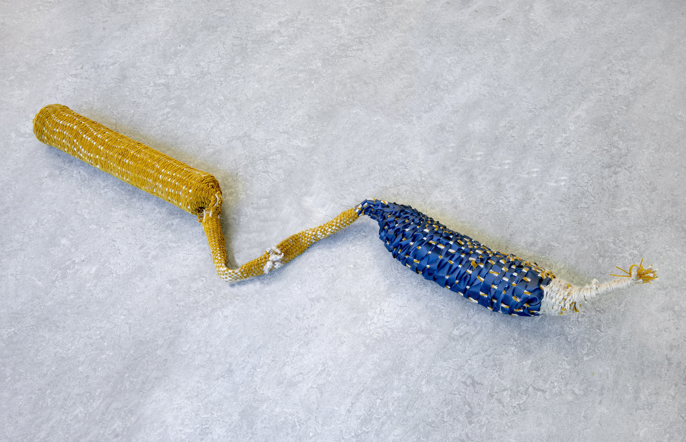
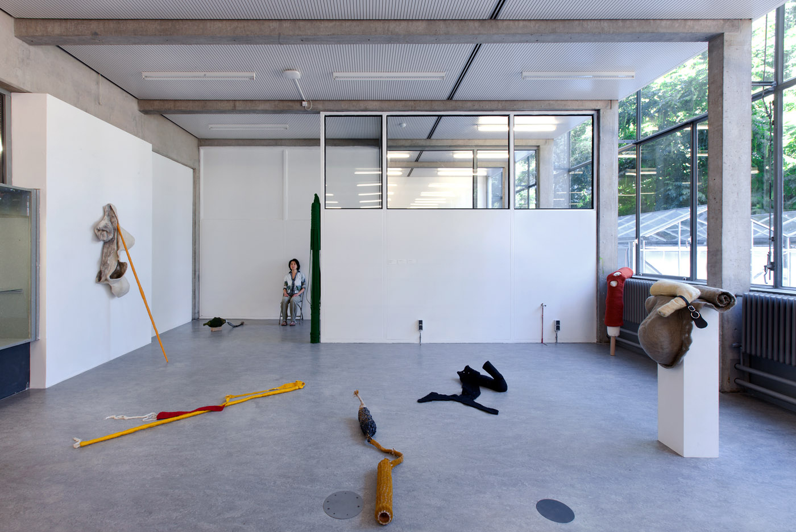
 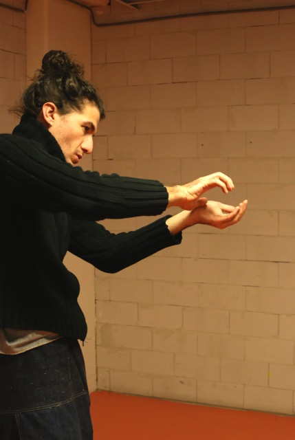
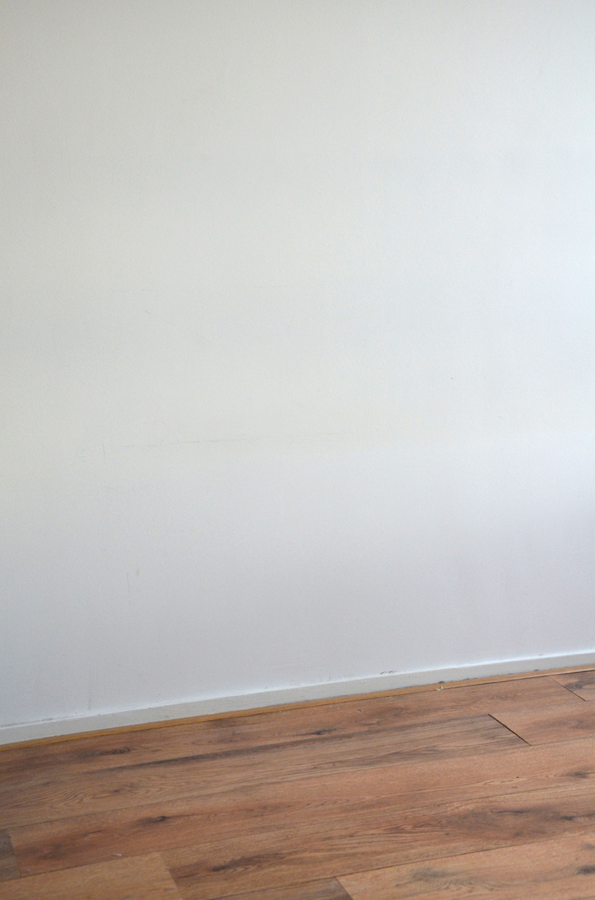
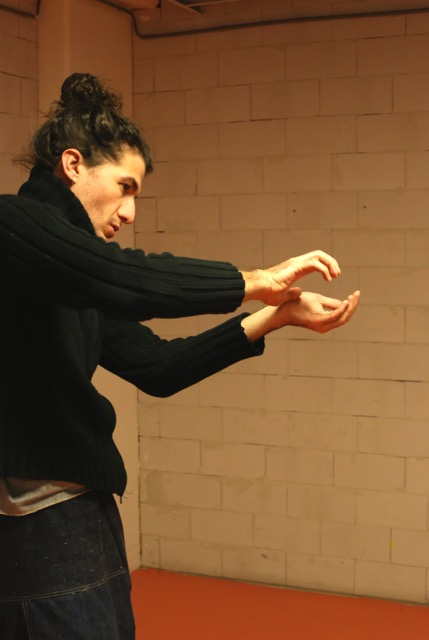
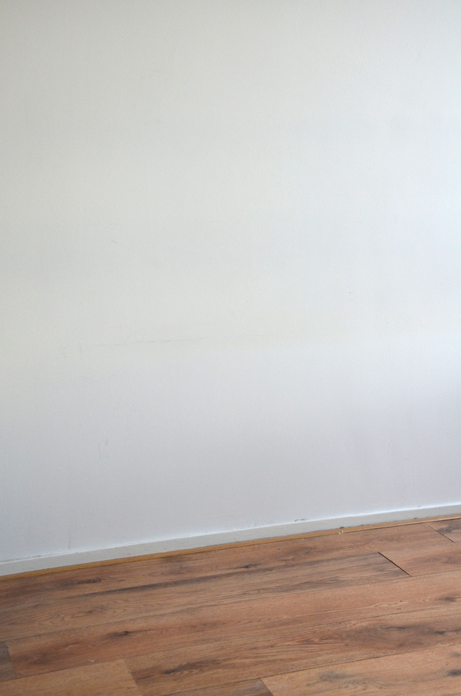
 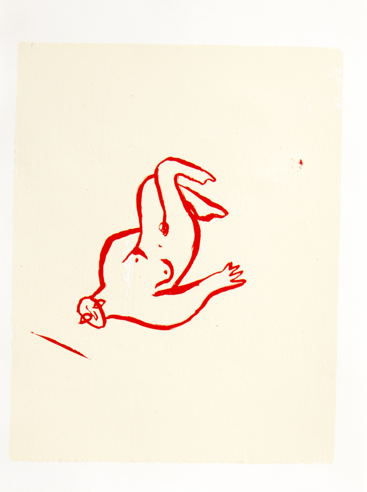
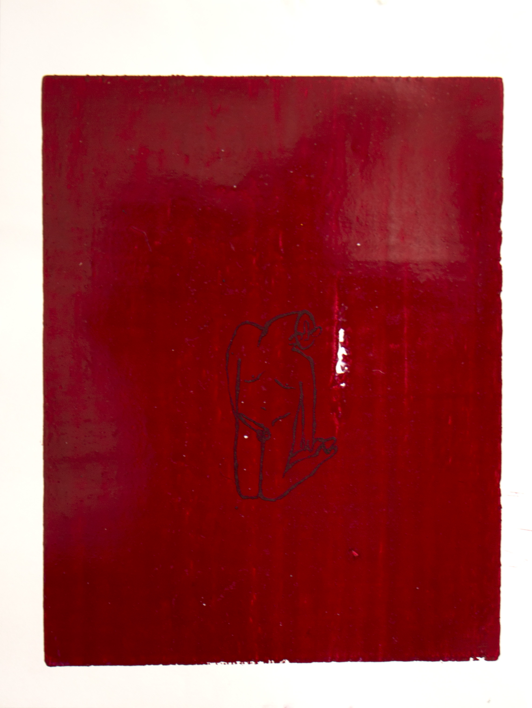
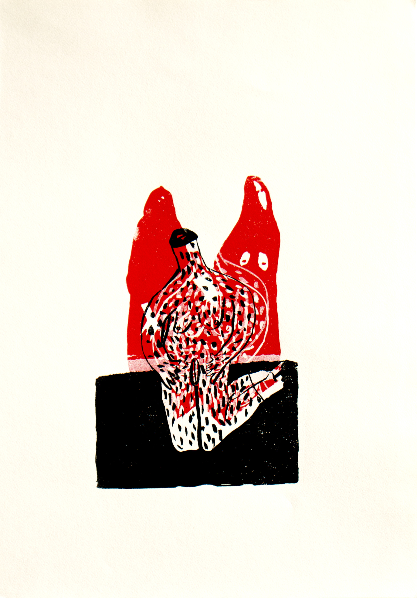
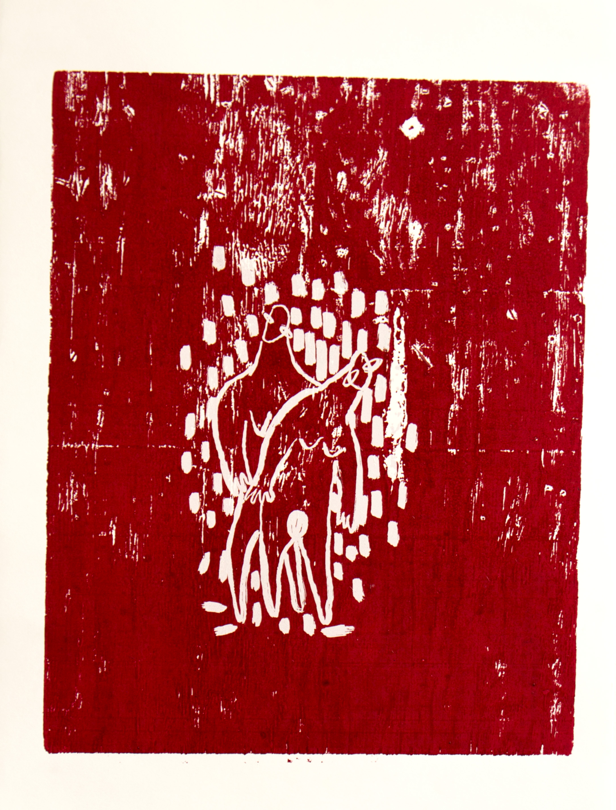
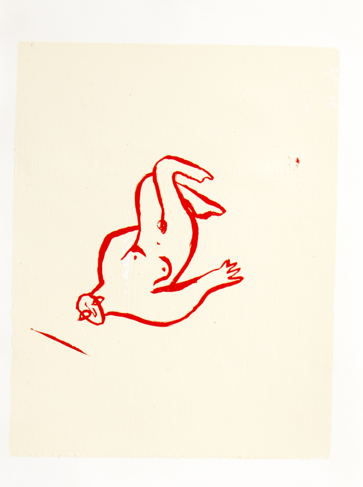
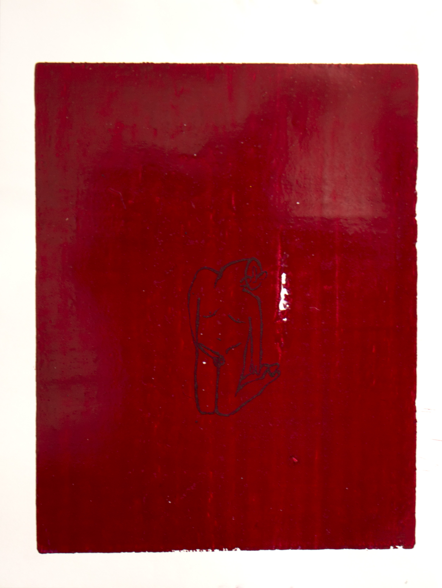
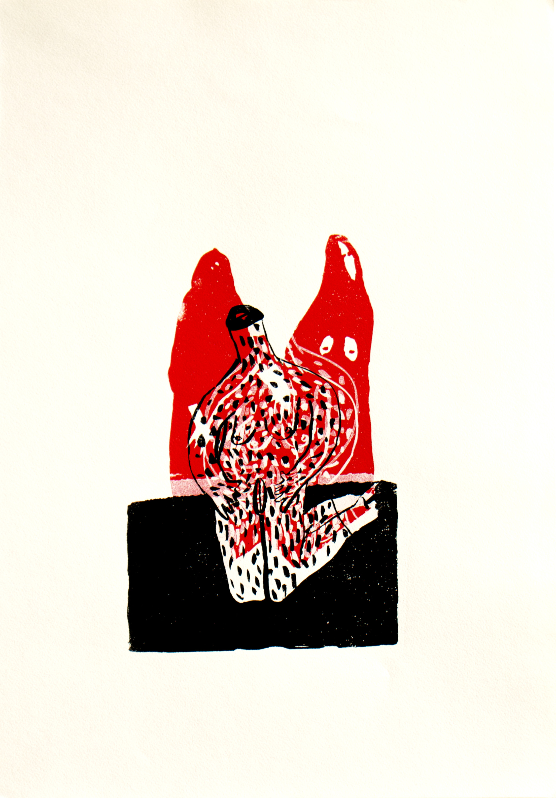
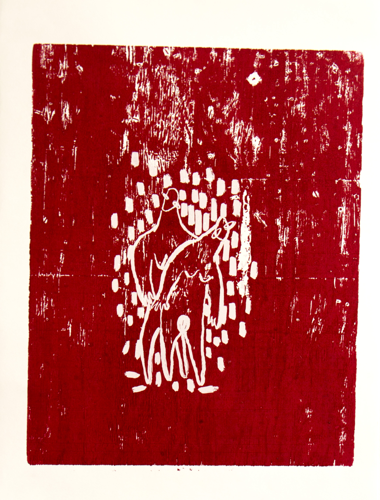